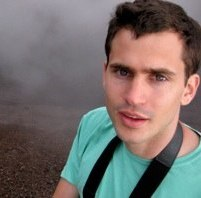

- Apr. 16, 2017: PDFs of accepted papers now available (see below)
- Apr. 11, 2017: The workshop was a great success! Here's a group photo (thanks to Ricardo Baeza-Yates for remembering to take one!).
- Mar. 26, 2017: Tentative schedule posted
- Mar. 26, 2017: Happy to announce Marius Pașca from Google as a keynote speaker!
- Jan. 24, 2017: In response to multiple requests, the first paper submission deadline has been extended to Tuesday, January 31, 2017 (see below for more details).
- Jan. 19, 2017: Paper submission site now open
- Jan. 18, 2017: First invited speakers announced—stay tuned for more!
- Dec. 15, 2016: Wiki Workshop 2017 webpage online.
The workshop takes place in Meeting Room 8. (Please note that this is different from the room listed in the conference program!)
| 9:00 - 9:15 | Welcome |
| 9:15 - 9:45 | "How much does a polar bear weigh?" |
| 9:45 - 10:30 | Invited talk: Marius Pașca: Classes for the Masses |
| 10:30 - 11:00 | Morning tea* |
| 11:00 - 11:45 | Invited talk: Ben Hachey: Knowledge Base Jumping: From Entity Linking to Interactive Intelligence |
| 11:45 - 12:30 | Invited talk: Ricardo Baeza-Yates: The Vicious Cycle of Bias on the Web |
| 12:30 - 13:30 | Lunch* |
| 13:30 - 14:00 | Poster spotlight presentations |
| 14:00 - 15:30 | Poster session (incl. afternoon tea* from 15:00 - 15:30) |
| 15:30 - 16:15 | Invited talk: Cristian Danescu-Niculescu-Mizil: Conversational Markers of Social Dynamics |
| 16:15 - 16:55 | Invited talk: Leila Zia |
| 16:55 - 17:00 | Closing remarks |
* Tea breaks and lunches will be served in the exhibition hall located in Pavilion 1.
(More speakers to be announced soon—stay tuned!)

The Vicious Cycle of Bias on the Web
The Web is the most powerful communication medium and the largest public data repository that humankind has created. Its content ranges from great reference sources such as Wikipedia to ugly fake news. Indeed, social (digital) media is just an amplifying mirror of ourselves. Hence, the main challenge of search engines and other websites that rely on web data is to assess the quality of such data. However, as all people has their own biases, web content as well as our web interactions are tainted with many biases. Data bias includes redundancy and spam, while interaction bias includes activity and presentation bias. In addition, sometimes algorithms add bias, particularly in the context of search and recommendation systems. As bias generates bias, we stress the importance of debiasing data as well as using the context and other techniques such as explore & exploit, to break the filter bubble. The main goal of this talk is to make people aware of the different biases that affect all of us on the Web. Awareness is the first step to be able to fight and reduce the vicious cycle of bias on the Web.
Ricardo's areas of expertise are web search and data mining,
information retrieval, data science and algorithms. Since June 2016,
he has been CTO of NTENT, a semantic search technology company based in
California, USA. Before he was VP of Research at Yahoo Labs, based in Barcelona, Spain, and later in Sunnyvale,
California, from January 2006 to February 2016. He also is part time Professor at
DTIC of the Universitat Pompeu Fabra, in Barcelona, Spain, as well as at DCC of
Universidad de Chile in Santiago. Until 2004 he was Professor and founding director
of the Center for Web Research at the later place. He obtained a Ph.D. in CS from
the University of Waterloo, Canada, in 1989. He is co-author of the best-seller
Modern Information Retrieval textbook published by Addison-Wesley in 2011 (2nd ed),
that won the ASIST 2012 Book of the Year award. From 2002 to 2004 he was elected to
the Board of Governors of the IEEE Computer Society and between 2012 and 2016 was elected for the ACM Council. Since 2010 is a founding member of the Chilean Academy of Engineering. In 2009 he was named ACM Fellow and in 2011 IEEE Fellow, among other awards and distinctions.

Conversational Markers of Social Dynamics
Can conversational dynamics—the nature of the back and forth between people—predict the outcomes of social interactions? In this talk I will introduce a computational framework for modeling conversational dynamics and for extracting the social signals they encode, and apply it in a variety of different settings. First, I will show how these signals can be predictive of the future evolution of a dyadic relationship. In particular, I will characterize friendships that are unlikely to last and examine temporal patterns that foretell betrayal in the context of the Diplomacy strategy game. Second, I will discuss conversational patterns that emerge in problem-solving group discussions, and show how these patterns can be indicative of how (in)effective the collaboration is. I will conclude by focusing on the effects of under and over-confidence on the dynamics and outcomes of decision-making discussions.
(This talk includes joint work with Jordan Boyd-Graber, Liye Fu, Ravi Kumar, Srijan Kumar, Lillian Lee, Vlad Niculae, Sujith Ravi, and Justine Zhang.)
Cristian is an assistant professor in the information science department at Cornell University. His research aims at developing computational frameworks that can lead to a better understanding of human social behavior, by unlocking the unprecedented potential of the large amounts of natural language data generated online. He is the recipient of several awards (including the WWW 2013 Best Paper Award, a CSCW 2017 Best Paper Award, and a Google Faculty Research Award), and his work has been featured in popular-media outlets such as the Wall Street Journal, NBC's The Today Show, NPR and the New York Times.
Classes for the Masses
Instances ("Google") and their more specific ("technology company")
and more general ("company", "business") classes are building blocks
of large-scale taxonomies, which in turn are the backbone of knowledge
repositories whether created manually or extracted from text. Data
available within Wikipedia makes it an intriguing resource towards
distinguishing, understanding and populating open-domain, fine-grained
classes relevant to knowledge acquisition and Web search.
Marius is a research scientist at Google in Mountain View,
California. He graduated with a Ph.D. degree in Computer Science from
Southern Methodist University, Dallas, Texas, and an M.Sc. degree in
Computer Science from Joseph Fourier University, Grenoble, France. He
is the author of the book "Open-domain question answering from large
text collections". He served as area co-chair of HTL-06, CIKM-08,
EMNLP-09, ACL-14 and EMNLP-14 and program co-chair of EMNLP-12.
Current research interests include factual information extraction from
unstructured text within documents and queries, with applications in
Web search.
Ben Hachey (University of Sydney)

Knowledge Base Jumping: From Entity Linking to Interactive Intelligence
Wikipedia is an unprecedented encyclopaedic resource and a model for large-scale knowledge management. It provides core data for modern knowledge systems like search contextualisation and text linking. And it points the way for other endeavours that seek to solicit and coordinate the collective knowledge of many users. In this talk, I will review learnings from nearly ten years of applying Wiki principles in research and commercial projects, e.g., strategies for applications that require entities or knowledge beyond Wikipedia. And I will discuss new models that are helping us move beyond collective knowledge towards interactive intelligence.
Ben is a data science professional of 15+ years, with key expertise product-driven and user-centric artificial intelligence, computational linguistics, interactive machine learning, and information integration. Until recently, he led the data science team at Hugo.ai building an interactive session search platform for finding and summarising people's online profiles. Ben supervises PhD and Honours students at the University of Sydney where was previously a DECRA Research Fellow and developed the Master of Data Science. Research focus areas have included active learning for named entity recognition, large-scale entity linking, collaborative knowledge management, wide-scope relation and attribute extraction, and fact-driven text generation.
Leila Zia (Wikimedia Foundation)
 Title and abstract to be announced soon.
Title and abstract to be announced soon.
Leila Zia is a Senior Research Scientist at the Wikimedia Foundation. Her research interests include quantifying and addressing the gaps of knowledge in Wikipedia and Wikidata, understanding Wikipedia's readers, and studying the contributor diversity on Wikimedia projects. She received her PhD from Stanford University in Management Science and Engineering.
Yashaswi Pochampally and Kamalakar Karlapalem
Notability Determination for Wikipedia
[PDF]
Thomas Arnold, Johannes Daxenberger, Iryna Gurevych and Karsten Weihe
Is Interaction More Important Than Individual Performance? A Study of Motifs in Wikia
[PDF]
Erik Dahm, Moritz Schubotz, Norman Meuschke and Bela Gipp
Performing Social and Economic Data Analysis Using Wikipedia's Edit History
[PDF]
Reed Harder, Alfredo Velasco, Michael Evans, Chuankai An and Daniel Rockmore
Wikipedia Verification Check: A Chrome Browser Extension
[PDF]
Ester Pantaleo, Tommaso Di Noia and Vito Walter Anelli
Etytree: A Graphical and Interactive Etymology Dictionary Based on Wiktionary
[PDF]
Amir Sarabadani, Aaron Halfaker and Dario Taraborelli
Building Automated Vandalism Detection Tool for Wikidata
[PDF]
Nemanja Spasojevic, Preeti Bhargava and Guoning Hu
DAWT: Densely Annotated Wikipedia Texts across Multiple Languages
[PDF]
Kai Zhu, Lev Muchnik and Dylan Walker
Content Growth in Wikipedia: A Large-Scale Natural Experiment
Michele Tizzoni, André Panisson, Daniela Paolotti and Ciro Cattuto
Attention Patterns during Public Health Emergencies from Wikipedia Page View Data: Case Study for the 2015-2016 Zika Virus Epidemic
Feng Shi, Misha Teplitskiy and Eamon Duede
Wisdom of Politically Polarized Crowds
Workshop date: April 4, 2017
If authors want paper to appear in proceedings:
- Submission deadline:
January 24, 2017 January 31, 2017 (end of day anywhere on Earth)
- Author feedback: February 7, 2017
- Camera-ready version due:
February 14, 2017 February 23, 2017 (instructions here)
If authors do not want paper to appear in proceedings:
- Submission deadline: February 26, 2017
- Author feedback: March 7, 2017
Wikipedia is one of the most popular sites on the Web, a main source of knowledge for
a large fraction of Internet users, and one of the very few projects that make not only their
content but also many activity logs available to the public. Furthermore, other Wikimedia projects,
such as Wikidata and Wikimedia Commons, have been created to share other types of
knowledge with the world for free. For a variety of reasons (quality and quantity of content,
reach in many languages, process of content production, availability of data, etc.) such projects
have become important objects of study for researchers across many subfields of the computational
and social sciences, such as social network analysis, artificial intelligence, linguistics,
natural language processing, social psychology, education, anthropology, political science,
human–computer interaction, and cognitive science.
The goal of this workshop
is to bring together researchers exploring all aspects of Wikimedia websites such as Wikipedia,
Wikidata, and Commons. With members of the Wikimedia Foundation's Research team on the
organizing committee and with the experience of successful
workshops in 2015 and 2016, we aim to
continue facilitating a direct pathway for exchanging ideas between the organization that
operates Wikimedia websites and the researchers interested in studying them.
Topics of interest include, but are not limited to
- new technologies and initiatives to grow content, quality, diversity, and participation across Wikimedia projects
- use of bots, algorithms, and crowdsourcing strategies to curate, source, or verify content and structured data
- bias in content and gaps of knowledge
- diversity of Wikimedia editors and users
- understanding editor motivations, engagement models, and incentives
- Wikimedia consumer motivations and their needs: readers, researchers, tool/API developers
- innovative uses of Wikipedia and other Wikimedia projects for AI and NLP applications
- consensus-finding and conflict resolution on editorial issues
- participation in discussions and their dynamics
- dynamics of content reuse across projects and the impact of policies and community norms on reuse
- privacy
- collaborative content creation (unstructured, semi-structured, or structured)
- collaborative task management
- innovative uses of Wikimedia projects' content and consumption patterns as sensors for real-world events, culture, etc.
Papers should be 1 to 8 pages long and will be published on the workshop webpage and optionally
(depending on the authors' choice) in the workshop proceedings.
Authors whose papers are accepted to the workshop will have the opportunity to participate in a poster session.
We explicitly encourage the submission of preliminary work in the form of extended abstracts (1 or 2 pages).
Papers should be 1 to 8 pages long. We explicitly encourage the submission of
preliminary work in the form of extended abstracts (1 or 2 pages). No need to anonymize your submissions.
For submission dates, see above.
Bob is an assistant professor of Computer Science at EPFL. His research aims to understand, predict, and enhance human behavior in social and information networks by developing techniques in data science, data mining, network analysis, machine learning, and natural language processing. He holds a PhD in computer science from Stanford University.
Leila is a senior research scientist at the Wikimedia Foundation. Her current research interests are on understanding Wikipedia's readers, quantifying and addressing the gaps of knowledge in Wikipedia and Wikidata, and understanding and improving diversity in Wikipedia. She holds a PhD in management science and engineering from Stanford University.
Dario is a social computing researcher and the Wikimedia Foundation's Head of Research. His current interests focus on online collaboration, open science, and the measurement and discoverability of scientific knowledge. He holds a PhD in cognitive science from the École des Hautes Études en Sciences Sociales.
Jure is an associate professor of Computer Science at Stanford University. His research focuses on mining and modeling large social and information networks, their evolution, and diffusion of information and influence over them. Problems he investigates are motivated by large scale data, the Web and online media.
{kind=link}